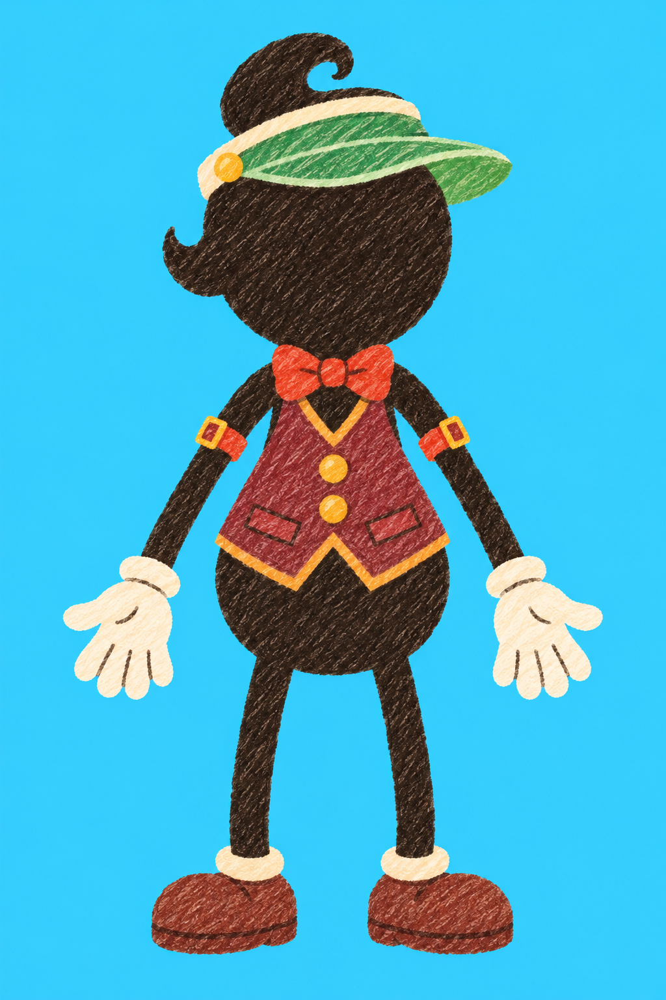
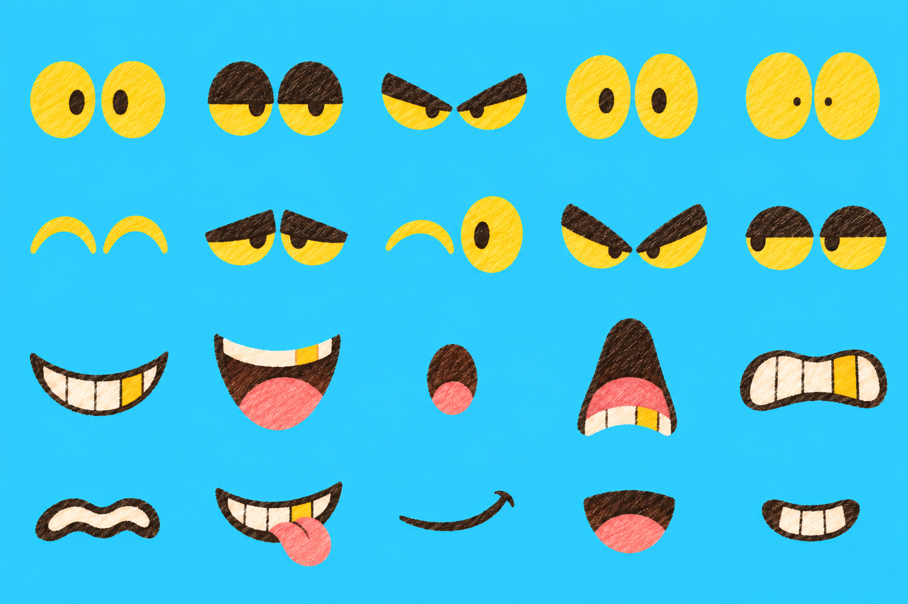
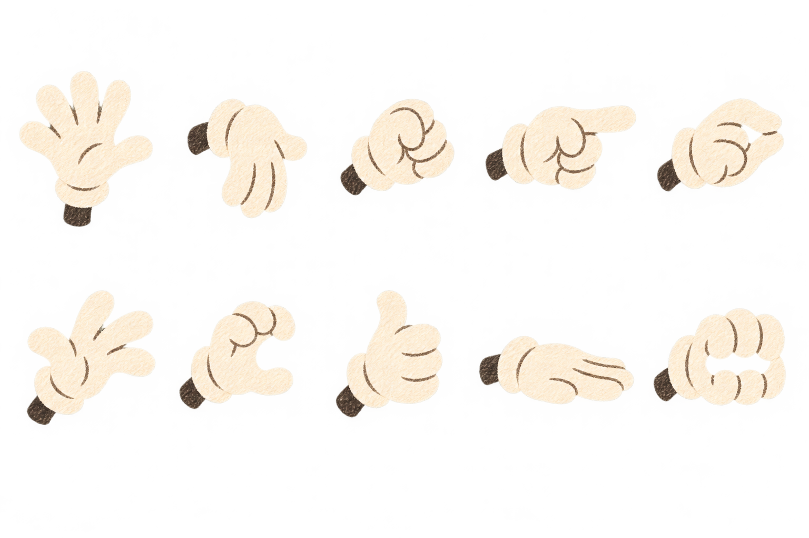
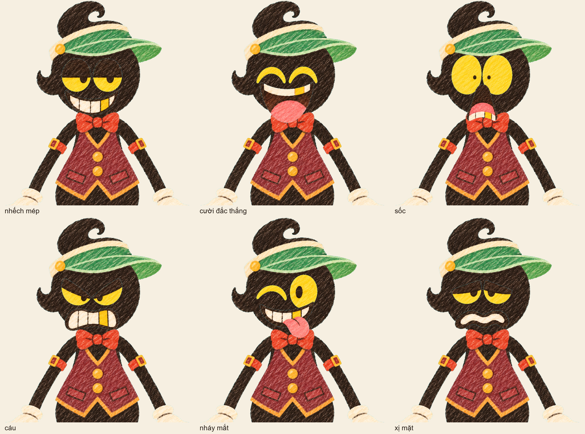
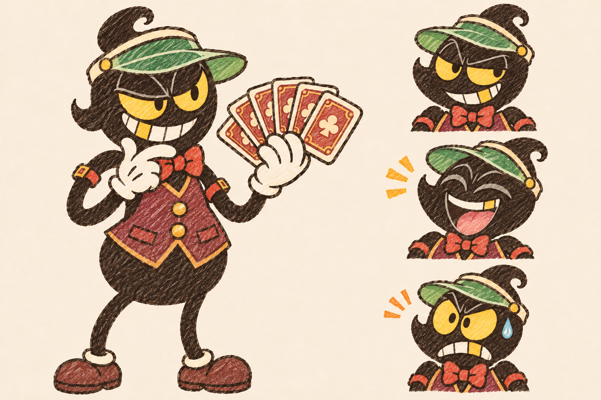
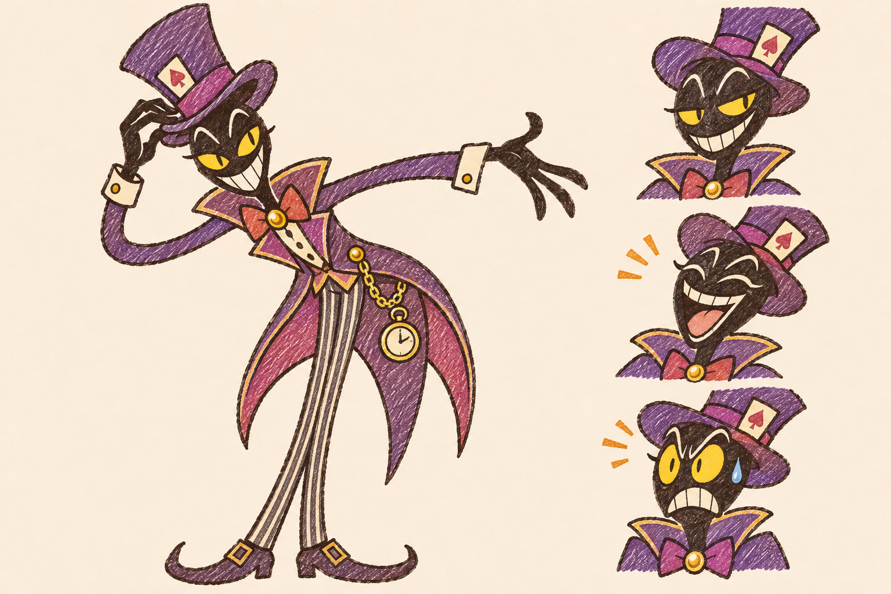
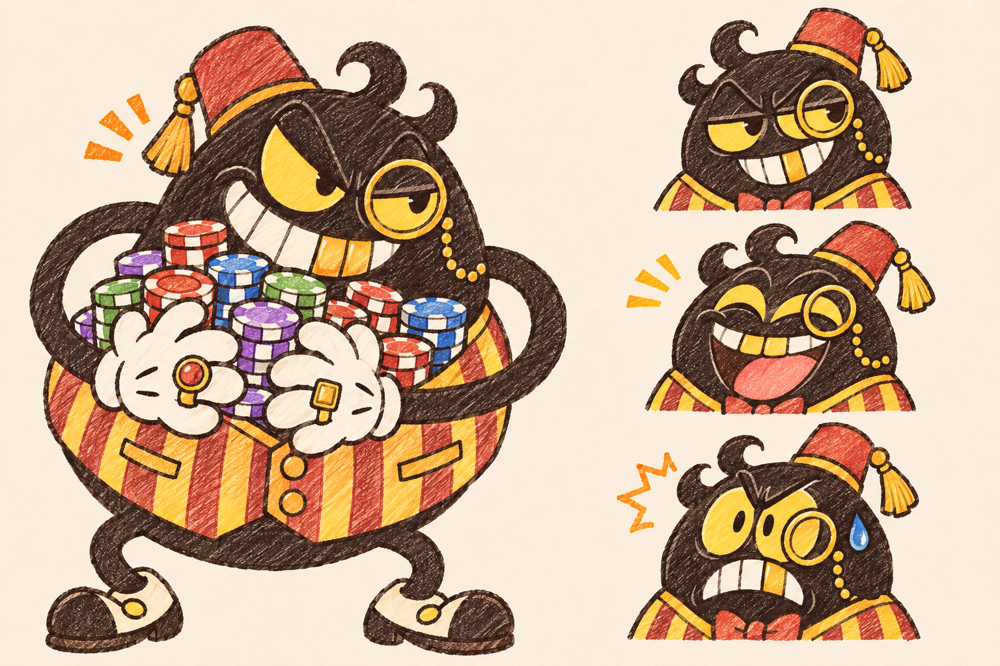
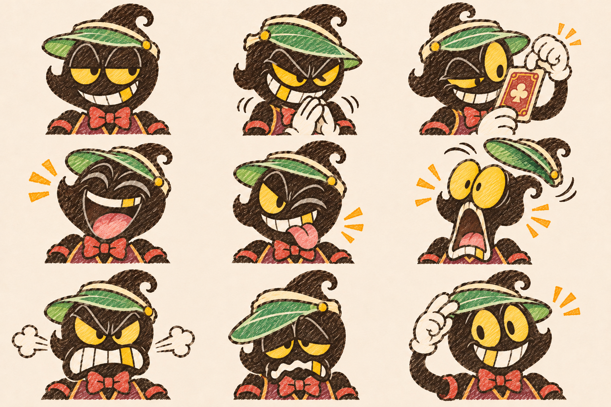
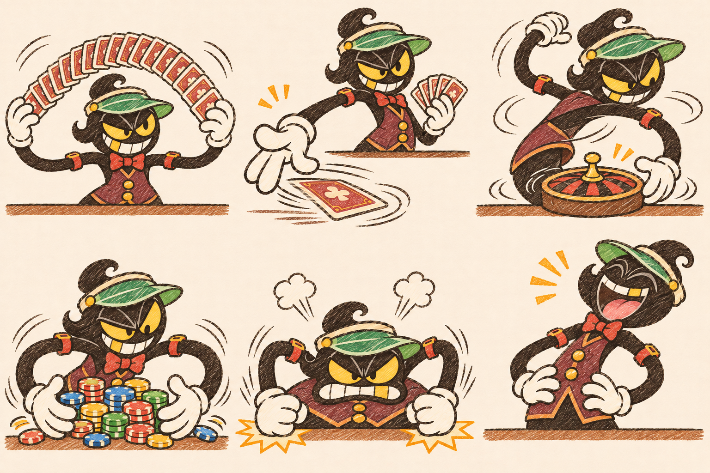
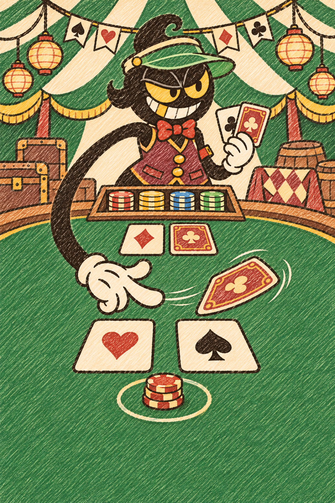

Lão Mực: dealer của Bến Lữ Khách
Concept chờ duyệt, 2026-11-25. Kế hoạch chi tiết: GD_Claude/31_LaoMuc_Dealer.md. Bấm ảnh để phóng to.
Tôi hiểu ý bạn thế này
- Một nhân vật người mực đen vẽ tay, mắt vàng, gian xảo nhưng duyên, đứng sau bàn, bàn ở phía người chơi (góc nhìn từ ghế ngồi).
- Ông ta dẫn người chơi qua đảo: đón ở bến lần đầu, giới thiệu sơ qua từng trò (FTUE); luật đầy đủ để người chơi tự đọc.
- Mỗi cảnh một bộ động tác: chia bài, quay bánh xe, kéo cần máy quả; đặt cược thì chip trượt lên bàn; nhà cái thắng thì hai tay vơ chip; biểu cảm thắng / thua là trọng tâm.
- Kiểu diễn tay chân ống cao su của hoạt hình đầu những năm 1930 (cách Cuphead dựng lại): tay không khớp vươn rất dài, nén giãn, lấy đà to, khung nhòe, đứng không bao giờ im.
- Học cách diễn, không chép nhân vật: thiết kế riêng cho game, vẽ bằng nét bút mực + chì màu của PokiClash, tô phẳng, không bóng, không quầng sáng quanh mắt.
Mới nhất: D2 bản 4, sửa hướng bàn tay (2026-11-26)
Sửa theo góp ý bản 3 (ống tay giữ nguyên bản 3; chỉ sửa bàn tay):
- Tay úp trên bàn (đứng chờ và mọi clip có dáng này): ngón cái (ngón ngắn nhất) giờ ở phía gần người, ngón út ở phía người chơi. Hình bàn tay úp gốc vẽ ngón cái ở mép dưới nên đã lật lại ngay từ khâu cắt mảnh. Dáng tay rũ lúc "thắng lớn" cũng đổi sang tay úp chĩa vào giữa.
- Cáu: nện bằng nắm tay dựng nghiêng, ngón cái ở trên, lòng bàn tay quay vào trong, cạnh ngón út chạm bàn; từ ghế người chơi thấy mu nắm tay (hình nắm tay nghiêng mới).
- Trả chip: bỏ kiểu một ngón chỉ xuống đẩy. Bàn tay dựng đứng (ngón cái ở trên, lòng tay quay vào trong) tì mép ngón út xuống bàn ngay sau chồng chip rồi gạt cả chồng tới ô cược (hình bàn tay mở dựng đứng mới).
- Vơ chip: hai bàn tay dựng đứng, ngón cái ở trên, lòng tay quay vào trong, đầu ngón chụm nhau thành mái nhà khép kín quây lấy chồng chip rồi kéo cả mái về khay. Đầu ngón chụm ở phía người chơi, cổ tay ở phía Lão Mực (nhìn từ phía Lão Mực là mái nhà; trên màn hình thành chữ V ôm chồng chip).
rig/L4_tay_nghieng.png, không viền, cùng nét găng trắng kem).
Nhịp các clip và giờ sự kiện giữ như bản 3. Mặt bàn, khay, chồng chip chỉ để xem. Hình chưa có nét viền.
Rig AtomSpine 65 xương, 12 clip, xuất atom/export/lao_muc.atomik. Tư liệu nghiên cứu (không dùng trong game, không đăng):
tờ soi một chu kỳ nhún, tờ soi một cú đổi tay.


Mới: D1, bộ hình để rig (chốt hướng A, tên Lão Mực)
Theo luật rig của dự án: hình đem rig không nét viền (viền vẽ sau cùng khi đã chốt animation), nền một màu để tách sạch; thân một lưới liền;
biểu cảm làm bằng đổi bộ mắt, miệng trên mặt để trống (không uốn lưới). Tay ống cao su sẽ là dải lưới đen nhiều xương, bàn tay đổi hình theo dáng.



rig/L4_tay_nghieng.png) Xoè, nghiêng, nắm, chỉ, kẹp góc bài, búng, vốc chip, giơ ngón cái, úp đẩy chip, nắm cần gạt (nền trong suốt).
1. Ba hướng nhân vật



2. Biểu cảm (hướng A)

| Mặt | Dùng khi |
|---|---|
| 1. Nhếch mép, mí nặng | đứng chờ (idle) |
| 2. Xoa tay âm mưu | người chơi đặt cược, đặt cược to |
| 3. Liếc trộm lá úp | Blackjack: lá ngửa là A hoặc 10 |
| 4. Cười đắc thắng | người chơi thua, nhà cái vơ chip |
| 5. Nháy mắt lè lưỡi | trêu khi người chơi thua sát nút |
| 6. Sốc rớt hàm, lưỡi trai bay | người chơi thắng lớn (blackjack, Sao Vàng, huy hiệu) |
| 7. Cáu xì khói | người chơi thắng 3 ván liền |
| 8. Xị mặt, lưỡi trai lệch | dealer quá 21; hết ván có thưởng ("mai ghé nhé") |
| 9. Chạm lưỡi trai chào | đón khách, hướng dẫn (FTUE) |
3. Dáng hoạt ảnh (hướng A)

- Tráo bài: bộ bài vòng cung giữa hai tay dang rộng như phong cầm (đầu phiên).
- Chia bài: tay vươn rất dài, búng lá bài xoay tới đúng ô người chơi, có khung nhòe.
- Quay bánh xe: xoắn người như lò xo rồi quất tay quay, búng viên bi.
- Vơ chip: hai tay vòng quanh đống chip như thòng lọng, kéo về khay.
- Đập bàn: cáu, thân bẹp ngang, xì khói.
- Ngửa cười: thân vươn cao, tay ôm bụng.
Khi làm thật: thân và tay là rig AtomSpine (tay là chuỗi 8–10 xương co giãn tới 2,5 lần, đích tay đặt lúc chạy đúng vị trí lá bài / chồng chip); mặt và bàn tay là bộ hình vẽ tay thay theo khung; động tác nhanh có 1–2 khung nhòe vẽ riêng.
4. Cảnh bàn bài nhìn từ ghế người chơi

- Lão Mực đứng sau bàn ở nửa trên màn (từ thắt lưng trở lên), giữa lều sọc xanh.
- Mặt bàn nỉ xanh ở nửa dưới, gần người xem; khay chip và bài của dealer ở mép xa; bài và ô cược của người chơi ở mép gần.
- Tay ống cao su vươn qua bàn tới tận chỗ người chơi để chia bài, vơ chip, đẩy chip trả.
- Dải dưới cùng để trống cho hàng nút (Rút, Dằn, Gấp đôi, Tách…). Các thông tin hiện nay (bậc cược, Hũ bàn) thu gọn lên thanh trên.
- Vòng Xoay: bánh xe nằm trên bàn trước mặt dealer. Máy Quả: máy đứng cạnh, Lão Mực vươn tay kéo cần.
5. Thử chuyển động (vẽ đơn giản, chỉ để duyệt nhịp)
Đang thử gì
- Tay ống cao su: không khớp, cong theo khoảng cách, vươn dài khi với xa, co về thì nảy quá đà rồi lắc.
- Lấy đà: trước khi chia, tay rút về sau; trước khi quay bánh xe, người xoắn lại.
- Nén giãn: cười thì vươn cao, sốc thì giật người, lưỡi trai bay lên.
- Đứng không bao giờ im: nhún hai phách, mắt liếc.
- Mắt dõi theo thứ quan trọng: lá bài, chồng chip, bánh xe.
Hình ở đây là hình khối tạm vẽ bằng code. Bản thật dùng hình vẽ tay của tờ concept, rig AtomSpine, mặt thay theo tờ biểu cảm, thêm khung nhòe.
6. Các bước làm
| Mốc | Việc | Duyệt bằng |
|---|---|---|
| D0 | Concept (trang này) | bạn chọn hướng |
| D1 | Chốt hướng, tên; tờ thiết kế chuẩn đứng sau bàn; tờ 12 biểu cảm, tờ 8 bàn tay | tờ soi |
| D2 | Tách mảnh, rig AtomSpine (tay chuỗi co giãn, mặt và bàn tay thay hình); clip chung: đứng chờ, chào, nói, phản ứng, vơ chip, trả chip (bản 2: làm lại kiểu ống cao su; bản 3: tay là ống chắc; bản 4: sửa hướng bàn tay) | ảnh động từng clip |
| D3 | Đêm Bài: nền lều nhìn từ ghế, lá bài bay, tráo, chia, liếc trộm, lật bài, quá 21; nối sự kiện game | chạy thử, quay màn |
| D4 | Vòng Xoay: bánh xe vẽ xoay thật, quay, dõi bi, chỉ ô, vơ / trả chip | chạy thử |
| D5 | Máy Quả: máy vẽ, cuộn trượt, kéo cần, phản ứng | chạy thử |
| D6 | FTUE: đón ở bến, lời dẫn từng trò, câu thắng / thua, hết lượt | chạy từ bản lưu mới |
| D7 | Lão Mực trồi góc màn hướng dẫn ở Bến câu, Trường đua, Chợ đen, Hầm đấu, Quán trọ | chạy thử |
| D8 | Âm thanh, tối ưu, máy thật | quay màn máy thật |
7. Cần bạn chốt
- Hướng: A (đề xuất), B, C, hay trộn (ví dụ thân A + kính một mắt của C)?
- Tên: "Lão Mực" (đề xuất), "Ông Bóng", hay tên khác?
- Một gương mặt cho cả đảo: bỏ 6 chủ quán riêng, Lão Mực dẫn mọi trò (đề xuất)?
- Mức "quỷ": giữ duyên dáng như concept, hay thêm nét quỷ nhẹ (chỏm như sừng nhỏ của C)?
- Diễn gian, luật công bằng (đề xuất): chỉ liếc bài, nháy mắt; tỉ lệ thắng không đổi?
- Máy quả: Lão Mực kéo cần hộ (đề xuất) hay người chơi tự kéo?
- Tiếng nói: chữ + tiếng lầm bầm vô nghĩa (đề xuất), hay lồng tiếng thật?